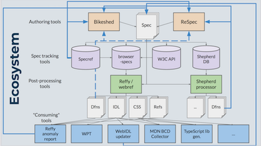

One more week to propose a talk at the Wide Color Gamut (WCG) & High Dynamic Range (HDR) workshop https://www.w3.org/Graphics/Color/Workshop/ https://twitter.com/svgeesus/status/1356261693240827907
https://twitter.com/w3cdevs/status/1356266019279556608To learn more about our overall efforts toward bringing #developers more into @w3c work at large, please watch:
https://youtu.be/sw-j75MQtQU
https://twitter.com/w3cdevs/status/1356878623312084993#webdevs, @w3c needs your input and feedback!
Find out why and how to get involved:
https://youtu.be/sw-j75MQtQU
https://twitter.com/w3cdevs/status/1356993369898176512The @webi18n activity explores gaps in language support (Adlam, Hebrew, German, French, N'Ko, Osage) on the #Web and in #ebooks #timetogiveinput #i18n
These drafts complement the 21 Gap-analysis docs published last June: https://www.w3.org/blog/International/2020/06/17/21-gap-analysis-first-public-working-drafts-published/ https://twitter.com/w3c/status/1357315734070841350
We are looking for expert contributors to move this work forward by documenting gaps in support and creating tests. For more info about the program: https://youtu.be/mx2eDHujM4c
https://twitter.com/w3cdevs/status/1357332065042264064#WebRTC is “a great example of the power the Web has to make people’s lives better and of what we can do when we work together to do that” https://twitter.com/mozhacks/status/1357653713981231106
https://twitter.com/w3cdevs/status/1354838998540279811
https://twitter.com/w3cdevs/status/1358771947966971904One of the workshop's outcomes is that a cross-community (@w3c, @opengeospatial, among others) #WorkingGroup will define a roadmap to make map viewers on the Web better: more usable, accessible, secure, private, global and performant #i18n #a11y #security #privacy #data
The report of the #W3CWorkshop on "Maps for the Web" is out! https://www.w3.org/2020/maps/report #Maps4HTML https://twitter.com/w3c/status/1358762893643243523
https://twitter.com/w3cdevs/status/1359083589103665152Session videos, transcripts, and supporting material are available from: https://www.w3.org/2020/maps/agenda
With thanks to sponsor @NRCan! #MapML
https://twitter.com/w3cdevs/status/1359083592635277312#Maps for the Web enable the combination of #geospatial information on the #Web, across industries, devices, and new application areas such as virtual and augmented reality #AR #VR
https://twitter.com/w3cdevs/status/1359083590923993091If you want to know more about the newly announced @OpenWebDocs read on the latest updated and mark your calendar for the Q&A next Wednesday üìÖ https://twitter.com/robertnyman/status/1358702667153903618
https://twitter.com/w3cdevs/status/1359511670746472449Congrats to editors @fantasai and @tabatkins for the newly published #WebStandard "#CSS Cascading and Inheritance Level 3" https://www.w3.org/TR/css-cascade-3/ #timetoadopt https://twitter.com/w3c/status/1359807190001942530
Features such as 'all', 'initial' and 'unset' are now a proven standard and join the list of other specs incl. "Selectors Level 3", "Fonts Level 3" and "Writing Modes Level 3" - see the current state of #CSS in the latest CSS Snapshot 2020 by the @csswg https://www.w3.org/TR/CSS/
https://twitter.com/w3cdevs/status/1359819182104272896Specs defining browser #APIs use a formal definition language (#WebIDL) which helps with writing and implementing these APIs. @tidoust, @dontcallmeDOM and @foolip are making it easier to re-use these definitions through a newly released NPM package:
https://www.npmjs.com/package/@webref/idl üéâüéá
That NPM package collects #WebIDL definitions from across all specifications identified as "#browser specifications" in a #github maintained registry: https://github.com/w3c/browser-specs
https://twitter.com/w3cdevs/status/1359848075444027398Then, these specifications are crawled by reffy, a tool that ingest plenty of useful data: #WebIDL definitions, but also #CSS grammar definitions, list of terms defined in the specs, cross-links, etc. https://github.com/w3c/reffy
https://twitter.com/w3cdevs/status/1359848079638355970All of that data has been collected and made available in another #github repo https://github.com/w3c/webref/
https://twitter.com/w3cdevs/status/1359848081467006979NPM packages the IDL pieces, with more packages (e.g. for #CSS definitions) in the pipe
https://twitter.com/w3cdevs/status/1359848088328941580To learn more about these projects and how that data gets reused (e.g. to document browser compat data in @MDN), watch the presentation given during #w3cTPAC last October: https://youtu.be/r9AXrFoFEg4 (slides at https://www.w3.org/2020/Talks/TPAC/unconference/specmining.pdf)
https://twitter.com/w3cdevs/status/1359848090900004867#MathML is a markup format that enables mathematics to be served, received, and processed, on the Web and beyond. https://developer.mozilla.org/en-US/docs/Web/MathML
This proposed charter would (re-)create a Math Working Group to refresh the support of #MathML in browsers https://w3c.github.io/charter-drafts/math-2020.html https://twitter.com/w3c/status/1359831321846153218
https://twitter.com/w3cdevs/status/1359892581723865088Learn more on the motivation behind this work in the presentation @briankardell gave at #w3cTPAC https://www.youtube.com/watch?v=-mBzpO5qXzU
https://twitter.com/w3cdevs/status/1359892585519730695If approved, the group would build on the #MathML core spec https://mathml-refresh.github.io/mathml-core/ developed in the MathML Refresh Community Group https://www.w3.org/community/mathml4/ - MathML Core focuses on the subset of MathML most suited for browser implementation
https://twitter.com/w3cdevs/status/135989258346031104023 Feb.: hybrid event in partnership with the Australia Western Region #W3Chapter with #w3c speakers @shawn_slh @BillKasdorf and Joshue O’Connor #a11y #WCAG #XR http://a11yperth.com/events/pwac-2021.php https://twitter.com/PerthA11yCamp/status/1361119214346461185
https://twitter.com/w3cdevs/status/1361243989547040768Here comes our first #WebPlatformEvolution sample: the @wicg_ most recently took over 2 proposals initially started in the @webperfwg around improving support for more fine-grained task scheduling to help with application responsiveness #WebPerf: https://github.com/WICG/scheduling-apis
https://twitter.com/w3cdevs/status/1361322135860436992To help keep track of this flurry of ideas, we're proposing to share info _here_ on these early proposals as they get adopted by these groups.
Let us know with a ♥ if you think that's useful!
Prior to being taken up in @w3c formal standardization process, many future #WebPlatform features start as ideas discussed in #W3CCommunityGroups. One of these, the Web Incubator @wicg_ , is a notable hub for incubating
these proposals. #WebPlatformEvolution
https://twitter.com/w3cdevs/status/13613221338891141131) scheduler.yield() would allow to run higher-priority tasks without yielding to same-priority tasks, something not possible with current #APIs and which tend to discourage script from yielding, leading to overall reduced responsiveness https://github.com/WICG/scheduling-apis/blob/master/YieldAndContinuation.md

https://twitter.com/w3cdevs/status/13613221390858649632) scheduler.postTask() would allow to classify tasks in the priority queue based on 3 levels: user-blocking, user-visible and background. https://github.com/WICG/scheduling-apis/blob/master/PrioritizedPostTask.md

https://twitter.com/w3cdevs/status/1361322142483243009Watch the presentation introducing these proposals to the @webperfwg back in June 2019 https://www.youtube.com/watch?v=eyAW4FuSgyE&t=14387
https://twitter.com/w3cdevs/status/1361322144676864002#ICYMI due to President's day, Family day, carnival day, … https://twitter.com/w3cdevs/status/1361322132077223936
https://twitter.com/w3cdevs/status/1361732029264576513Today! Live Q&A webinar at 17:00 UTC. More info at https://opencollective.com/open-web-docs/updates/community-q-and-a-session-join-us https://twitter.com/w3cdevs/status/1359511670746472449
https://twitter.com/w3cdevs/status/1361986196872847360Learn more on Living Standards à la @w3c in @plhw3org presentation from #w3cTPAC https://www.youtube.com/watch?v=RnnwbPm1ijo
The Service Workers Working Group develops the … #ServiceWorker specifications, the cornerstone of #PWA - this charter is also the first one where a group is set to use the eternal Candidate Recommendation mode of Living Standards à la W3C https://w3c.github.io/charter-drafts/sw-2020.html https://twitter.com/w3c/status/1362471283842310144
https://twitter.com/w3cdevs/status/1362774287418015747